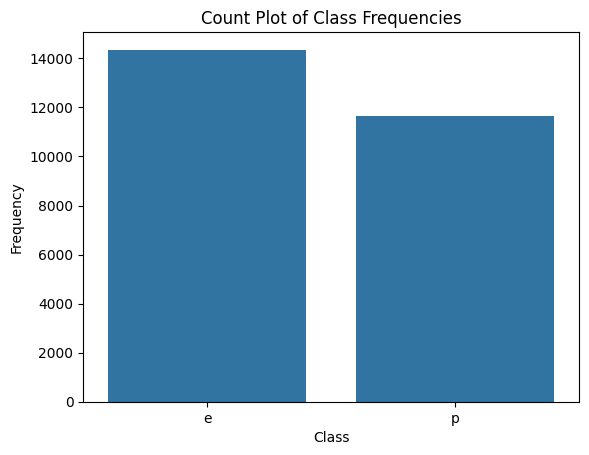
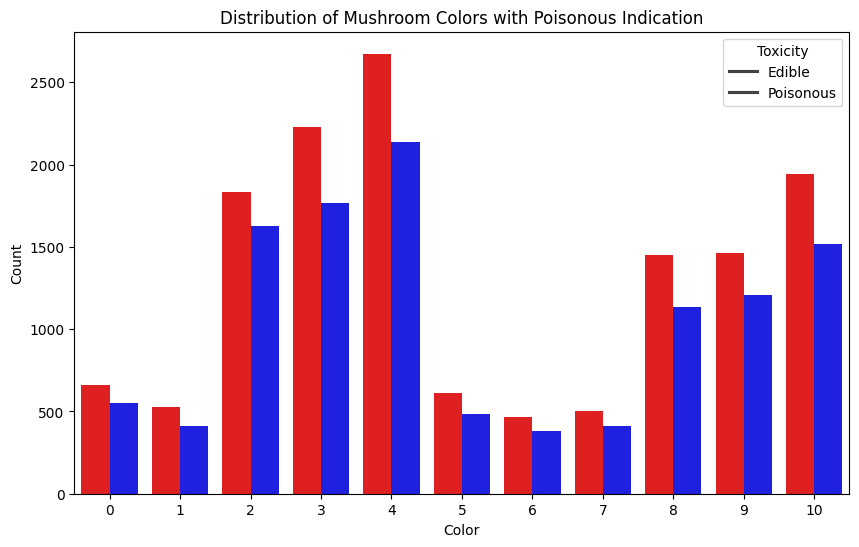
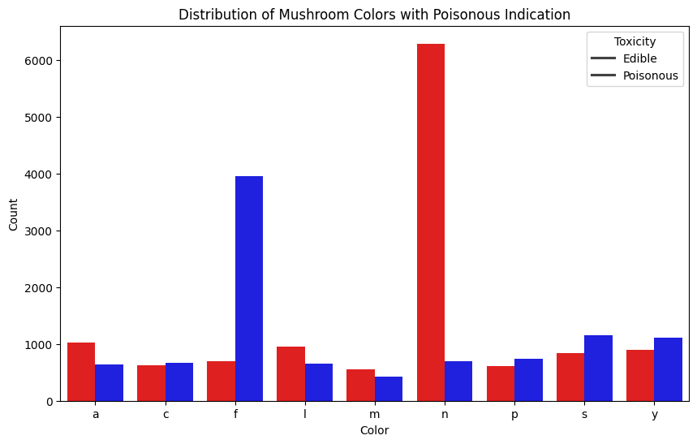

Poisoned Mushroom Dataset#
We are going to take a quick tour of machine learning by working on an example dataset. The mushroom dataset categorizes mushrooms as ‘poisonous’ or ‘edible’ and collects several descriptive properties of each mushroom example.
import pandas as pd
import os
Loading the dataset#
data_root = "/home/pewhite/github/aet-cs/ML-datasets/"
filename = "mushroom.csv"
filepath = os.path.join(data_root, filename)
df = pd.read_csv(filepath)
df
| class | cap-shape | cap-surface | cap-color | ruises | odor | gill-attachment | gill-spacing | gill-size | gill-color | ... | stalk-surface-below-ring | stalk-color-above-ring | stalk-color-below-ring | veil-type | veil-color | ring-number | ring-type | spore-print-color | population | habitat | |
|---|---|---|---|---|---|---|---|---|---|---|---|---|---|---|---|---|---|---|---|---|---|
| 0 | e | x | f | n | f | n | f | w | n | b | ... | y | w | p | NaN | n | o | p | w | v | NaN |
| 1 | p | NaN | y | g | t | NaN | f | c | b | k | ... | s | n | c | p | w | n | e | NaN | y | g |
| 2 | e | b | y | n | t | n | f | c | NaN | n | ... | s | p | NaN | p | w | o | p | b | y | w |
| 3 | e | x | g | g | t | n | f | w | b | n | ... | s | p | NaN | p | w | n | n | NaN | NaN | d |
| 4 | e | NaN | f | NaN | t | n | a | w | n | n | ... | k | NaN | w | p | w | NaN | l | w | v | d |
| ... | ... | ... | ... | ... | ... | ... | ... | ... | ... | ... | ... | ... | ... | ... | ... | ... | ... | ... | ... | ... | ... |
| 25981 | e | f | NaN | r | f | n | f | NaN | n | NaN | ... | NaN | n | p | p | w | o | p | k | v | NaN |
| 25982 | e | f | s | e | f | NaN | f | c | n | y | ... | y | w | p | p | w | NaN | p | r | y | d |
| 25983 | p | f | g | e | NaN | NaN | a | c | b | b | ... | y | w | NaN | p | w | o | p | h | v | m |
| 25984 | e | x | g | g | t | n | f | w | b | h | ... | f | NaN | NaN | p | w | t | e | NaN | s | NaN |
| 25985 | e | b | y | y | t | l | f | c | b | y | ... | k | g | o | p | w | o | l | k | s | g |
25986 rows × 23 columns
df.describe()
| class | cap-shape | cap-surface | cap-color | ruises | odor | gill-attachment | gill-spacing | gill-size | gill-color | ... | stalk-surface-below-ring | stalk-color-above-ring | stalk-color-below-ring | veil-type | veil-color | ring-number | ring-type | spore-print-color | population | habitat | |
|---|---|---|---|---|---|---|---|---|---|---|---|---|---|---|---|---|---|---|---|---|---|
| count | 25986 | 22513 | 22507 | 22527 | 22514 | 22536 | 22505 | 22587 | 22494 | 22418 | ... | 22563 | 22413 | 22553 | 22489 | 22483 | 22497 | 22478 | 22493 | 22475 | 22502 |
| unique | 2 | 6 | 4 | 10 | 2 | 9 | 2 | 2 | 2 | 12 | ... | 4 | 9 | 9 | 1 | 4 | 3 | 5 | 9 | 6 | 7 |
| top | e | x | y | n | f | n | f | c | b | b | ... | s | w | w | p | w | o | p | w | v | d |
| freq | 14354 | 7674 | 7602 | 4810 | 12361 | 6986 | 17811 | 16092 | 13997 | 3679 | ... | 10619 | 8580 | 8403 | 22489 | 15742 | 15713 | 8501 | 5085 | 8409 | 6573 |
4 rows × 23 columns
Data Exploration#
df.columns
Index(['class', 'cap-shape', 'cap-surface', 'cap-color', 'ruises', 'odor',
'gill-attachment', 'gill-spacing', 'gill-size', 'gill-color',
'stalk-shape', 'stalk-root', 'stalk-surface-above-ring',
'stalk-surface-below-ring', 'stalk-color-above-ring',
'stalk-color-below-ring', 'veil-type', 'veil-color', 'ring-number',
'ring-type', 'spore-print-color', 'population', 'habitat'],
dtype='object')
df['class']
0 e
1 p
2 e
3 e
4 e
..
25981 e
25982 e
25983 p
25984 e
25985 e
Name: class, Length: 25986, dtype: object
df.shape
(25986, 23)
df['class'].describe()
count 25986
unique 2
top e
freq 14354
Name: class, dtype: object
df['class'].value_counts()
class
e 14354
p 11632
Name: count, dtype: int64
import seaborn as sns
from matplotlib import pyplot as plt
# Count plot
sns.countplot(x='class', data=df)
plt.title('Count Plot of Class Frequencies')
plt.xlabel('Class')
plt.ylabel('Frequency')
plt.show()

import pandas as pd
from sklearn.feature_selection import chi2
from sklearn.preprocessing import LabelEncoder
le = LabelEncoder()
df['cap-color-encoded'] = le.fit_transform(df['cap-color'])
df['class-encoded'] = LabelEncoder().fit_transform(df['class'])
print(list(zip(le.classes_, le.transform(le.classes_))))
[('b', np.int64(0)), ('c', np.int64(1)), ('e', np.int64(2)), ('g', np.int64(3)), ('n', np.int64(4)), ('p', np.int64(5)), ('r', np.int64(6)), ('u', np.int64(7)), ('w', np.int64(8)), ('y', np.int64(9)), (nan, np.int64(10))]
df['cap-color-encoded'].describe()
count 25986.000000
mean 5.209074
std 3.120868
min 0.000000
25% 3.000000
50% 4.000000
75% 8.000000
max 10.000000
Name: cap-color-encoded, dtype: float64
# Count plot
sns.countplot(x='cap-color', data=df, )
plt.title('Count Plot of Cap Color Frequencies')
plt.xlabel('Cap Color')
plt.ylabel('Frequency')
plt.show()

# Count observations by color and toxicity
counts = df.groupby(['cap-color-encoded', 'class']).size().reset_index(name='count')
# Create the bar plot
plt.figure(figsize=(10, 6))
sns.barplot(x='cap-color-encoded', y='count', hue='class', data=counts, palette={'p': 'blue', 'e': 'red'})
# Add plot title and labels
plt.title('Distribution of Mushroom Colors with Poisonous Indication')
plt.xlabel('Color')
plt.ylabel('Count')
plt.legend(title='Toxicity', labels=['Edible', 'Poisonous'])
# Show the plot
plt.show()

dff = df[df['cap-color-encoded']<10]
chi2(dff[['cap-color-encoded']],dff['class-encoded'])
(array([1.17609317]), array([0.27815279]))
dff.describe()
| cap-color-encoded | class-encoded | |
|---|---|---|
| count | 22527.000000 | 22527.000000 |
| mean | 4.473432 | 0.449061 |
| std | 2.677623 | 0.497410 |
| min | 0.000000 | 0.000000 |
| 25% | 3.000000 | 0.000000 |
| 50% | 4.000000 | 0.000000 |
| 75% | 7.000000 | 1.000000 |
| max | 9.000000 | 1.000000 |
# Count observations by color and toxicity
counts = df.groupby(['odor', 'class']).size().reset_index(name='count')
# Create the bar plot
plt.figure(figsize=(10, 6))
sns.barplot(x='odor', y='count', hue='class', data=counts, palette={'p': 'blue', 'e': 'red'})
# Add plot title and labels
plt.title('Distribution of Mushroom Colors with Poisonous Indication')
plt.xlabel('Color')
plt.ylabel('Count')
plt.legend(title='Toxicity', labels=['Edible', 'Poisonous'])
# Show the plot
plt.show()

le = LabelEncoder()
df['odor-encoded'] = le.fit_transform(df['odor'])
print(list(zip(le.classes_, le.transform(le.classes_))))
[('a', np.int64(0)), ('c', np.int64(1)), ('f', np.int64(2)), ('l', np.int64(3)), ('m', np.int64(4)), ('n', np.int64(5)), ('p', np.int64(6)), ('s', np.int64(7)), ('y', np.int64(8)), (nan, np.int64(9))]
chi2(df[['odor-encoded']],df['class-encoded'])
(array([500.23469597]), array([8.45094378e-111]))
import seaborn as sns
df = pd.read_csv(filepath)
mushrooms_encoded = pd.get_dummies(df)
corr = mushrooms_encoded.corr()
sns.set(rc={'figure.figsize': (10, 8)})
sns.heatmap(corr, cmap="Blues")
<Axes: >
corr.class_p[abs(corr.class_p)>0.1]
class_e -1.000000
class_p 1.000000
odor_f 0.377583
odor_n -0.423318
gill-size_b -0.122242
gill-size_n 0.122991
stalk-surface-above-ring_k 0.125727
Name: class_p, dtype: float64
Data Modeling#
import pandas as pd
from sklearn.model_selection import train_test_split
from sklearn.preprocessing import LabelEncoder
from sklearn.tree import DecisionTreeClassifier
from sklearn.metrics import accuracy_score, classification_report
df = pd.read_csv(filepath)
X = df.drop('class', axis = 1)
y = df['class']
X = pd.get_dummies(X)
Decision Tree Classifier#
# Split the data into training and testing sets
X_train, X_test, y_train, y_test = train_test_split(X, y, test_size=0.2, random_state=42)
# Initialize the DecisionTreeClassifier
clf = DecisionTreeClassifier(random_state=10, criterion='entropy',class_weight = {'p':100, 'e':0.1})
# Fit the model
clf.fit(X_train, y_train)
# Make predictions
y_pred = clf.predict(X_test)
# Evaluate the model
accuracy = accuracy_score(y_test, y_pred)
print(f"Accuracy: {accuracy}")
print("Classification Report:")
print(classification_report(y_test, y_pred))
Accuracy: 0.671219699884571
Classification Report:
precision recall f1-score support
e 0.69 0.73 0.71 2873
p 0.64 0.60 0.62 2325
accuracy 0.67 5198
macro avg 0.67 0.66 0.67 5198
weighted avg 0.67 0.67 0.67 5198
from sklearn.metrics import confusion_matrix, ConfusionMatrixDisplay
confusion_matrix(y_test, y_pred)
array([[2086, 787],
[ 922, 1403]])
# Calculate the confusion matrix
cm = confusion_matrix(y_test, y_pred)
cm_display = ConfusionMatrixDisplay(confusion_matrix=cm, display_labels=clf.classes_)
# Plot the confusion matrix
fig, ax = plt.subplots(figsize=(8, 6))
sns.heatmap(cm, annot=True, fmt='d', cmap='Blues', xticklabels=clf.classes_, yticklabels=clf.classes_)
plt.xlabel('Predicted')
plt.ylabel('Actual')
plt.title('Confusion Matrix')
plt.show()

Testing more methods#
def classifier_tryout(clf, X_train, y_train, X_test, y_test):
clf.fit(X_train, y_train)
# Make predictions
y_pred = clf.predict(X_test)
# Evaluate the model
accuracy = accuracy_score(y_test, y_pred)
print(f"Accuracy: {accuracy}")
print("Classification Report:")
print(classification_report(y_test, y_pred))
Random Forest#
from sklearn.ensemble import RandomForestClassifier
clf = RandomForestClassifier(random_state=42, class_weight={'e':100, 'p':1})
classifier_tryout(clf, X_train, y_train, X_test, y_test)
Accuracy: 0.7418237783762985
Classification Report:
precision recall f1-score support
e 0.77 0.75 0.76 2873
p 0.71 0.73 0.72 2325
accuracy 0.74 5198
macro avg 0.74 0.74 0.74 5198
weighted avg 0.74 0.74 0.74 5198
Support Vector Machines#
from sklearn.svm import SVC
# Initialize the RandomForestClassifier
clf = SVC(random_state=42, kernel='rbf')
classifier_tryout(clf, X_train, y_train, X_test, y_test)
Accuracy: 0.749134282416314
Classification Report:
precision recall f1-score support
e 0.76 0.80 0.78 2873
p 0.73 0.69 0.71 2325
accuracy 0.75 5198
macro avg 0.75 0.74 0.74 5198
weighted avg 0.75 0.75 0.75 5198
Logistic Regression#
from sklearn.linear_model import LogisticRegression
# Initialize the LogisticRegression
clf = LogisticRegression(random_state=42)
classifier_tryout(clf, X_train, y_train, X_test, y_test)
Accuracy: 0.746056175452097
Classification Report:
precision recall f1-score support
e 0.76 0.78 0.77 2873
p 0.72 0.70 0.71 2325
accuracy 0.75 5198
macro avg 0.74 0.74 0.74 5198
weighted avg 0.75 0.75 0.75 5198
k-Nearest Neighbors#
from sklearn.neighbors import KNeighborsClassifier
# Initialize the KNeighborsClassifier
clf = KNeighborsClassifier(weights='uniform')
classifier_tryout(clf, X_train, y_train, X_test, y_test)
Accuracy: 0.6854559445940747
Classification Report:
precision recall f1-score support
e 0.70 0.76 0.73 2873
p 0.67 0.60 0.63 2325
accuracy 0.69 5198
macro avg 0.68 0.68 0.68 5198
weighted avg 0.68 0.69 0.68 5198
GradientBoost#
from sklearn.ensemble import GradientBoostingClassifier
# Initialize the GradientBoostingClassifier
clf = GradientBoostingClassifier(random_state=42)
classifier_tryout(clf, X_train, y_train, X_test, y_test)
Accuracy: 0.7518276260100039
Classification Report:
precision recall f1-score support
e 0.77 0.79 0.78 2873
p 0.73 0.70 0.72 2325
accuracy 0.75 5198
macro avg 0.75 0.75 0.75 5198
weighted avg 0.75 0.75 0.75 5198
Neural Network#
from sklearn.neural_network import MLPClassifier
# Initialize the MLPClassifier
clf = MLPClassifier(random_state=42, hidden_layer_sizes=(1000,10,), learning_rate='adaptive')
classifier_tryout(clf, X_train, y_train, X_test, y_test)
Accuracy: 0.7052712581762216
Classification Report:
precision recall f1-score support
e 0.73 0.73 0.73 2873
p 0.67 0.67 0.67 2325
accuracy 0.71 5198
macro avg 0.70 0.70 0.70 5198
weighted avg 0.71 0.71 0.71 5198